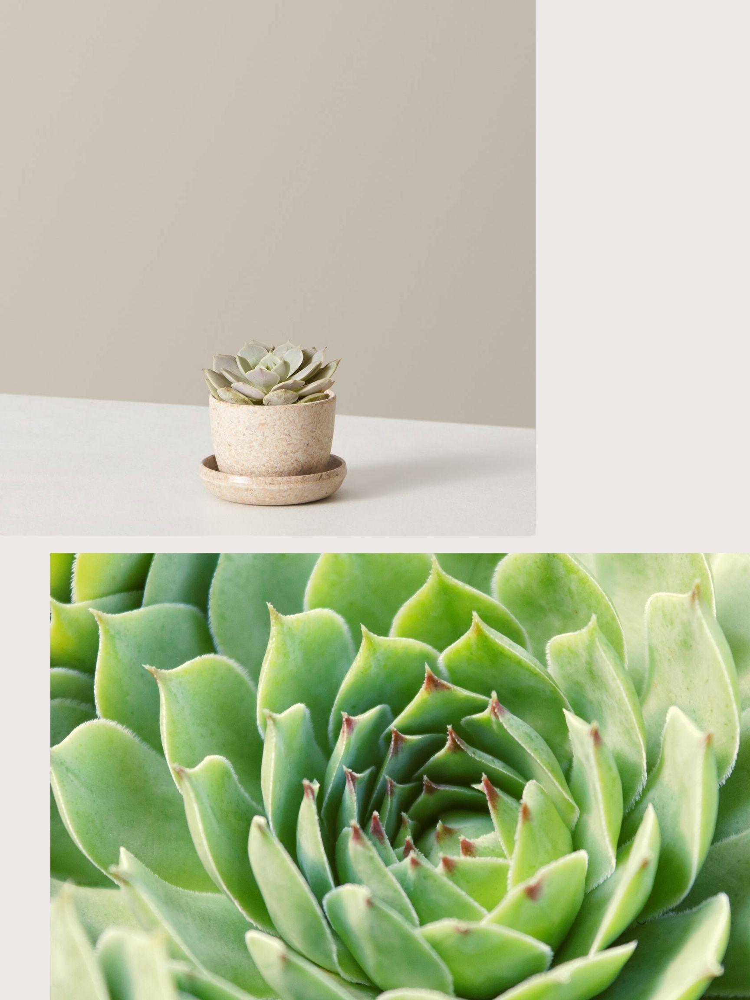

Echeveria

Echeverias are one of the most popular types of succulents and are frequently featured in succulent gardens, floral arrangements, terrariums, artwork, and even wedding cakes. Their stunning rosette shape, plump leaves, and large variety of colors give them a striking resemblance to flowers which makes them easy to decorate with. Their unique appearance and low maintenance needs have made Echeverias widely popular.
Thanks to their ease of care, Echeverias have grown in popularity among gardeners and house plant enthusiasts alike. They are well-suited to bright, dry environments and appreciate periods of neglect, making Echeverias ideal house plants whether you have a green thumb or not!